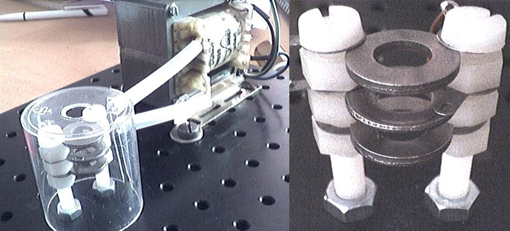

Mini EDB Project

Group Members
Alexandria
Sara
Michael
Description
We want to build the mini version of our Electrodynamic Balance (EDB) lab version.

Example simple EDB design in Thomas Leisner lab, using 3 rings (washers) with AC current applied to middle ring and DC applied to top or bottom ring
Progress (Last updated ~1800 on 19.01.2016)
First attempt to trap a particle ('Arizona Test Dust') with our mini-EDB was unsuccessful. We think that AC voltage was not high enough (may need to add audio amplifier that is used in our current EDB design). The other possibility is that we did successfully trap a particle but were unable to see it with our naked eyes.
Next steps:
1. Increase trapping voltage capabilities, use smaller particles and/or adjust geometries of the trap
2. Image and illuminate real particles (probably all set here)
3. Send signals from Labview to Arduino (not really sure how to do this yet)
4. Send signals from Arduino to AC (function generator) control via serial connection (started on this)
5. Finish Labview program so that AC/DC signals are automatically adjusted to maintain particle position

Screenshot of the Particle View Software (with a wire mesh target backlit with a red LED)
--> Number of particles and their x and y positions now being output

Photo of the wire mesh target and mini-EDB
Documents
Mini-EDB Plan Outline
Labview Camera Control vi's
Stuff we need from Microcenter/Amazon
TFT_LCD_Module_with_MicroSD_LED_Backlight_For_Arduino_and_Raspberry_Pi
LCD_Keypad_Shield_For_Arduino
USB_2_Serial_Converter
FTDI_Adapter_USB_Controller
Monochrome_13_128x64_OLED_Graphic_Display
2x RS232-Shield-V2-for-Arduino
SparkFun-SAMD21-Mini-Breakout
Adafruit-MCP4725-Breakout-Board-Interface
SparkFun-Danger-Shield